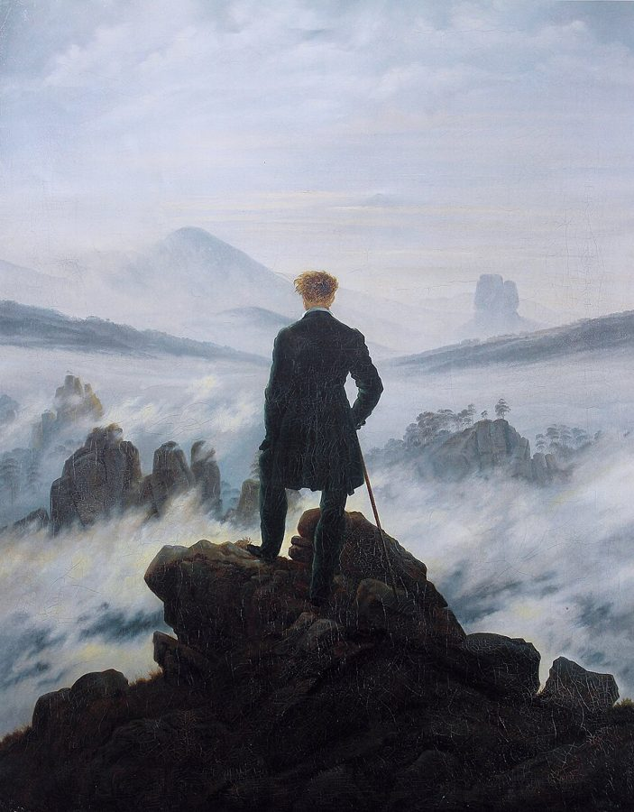
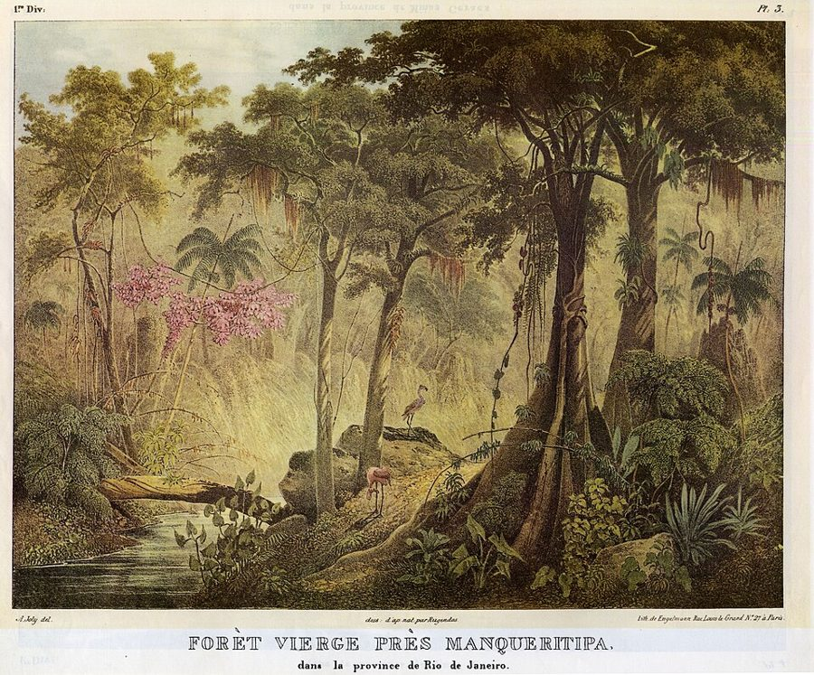
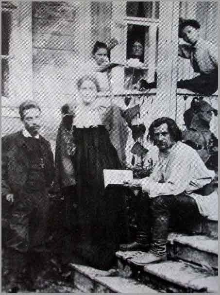

such an addictive idea
… has been such an addictive idea because …
一个让人上瘾的念头
把救赎说成会上瘾的东西。Phillips 给的理由：人心里总有一个问题，失去能给我们换回什么。救赎就是对这个问题的回答，所以人一次次回去找它。
序章的后半。前三节已经立了题：两人都认为有些苦难躲不掉，都把死亡放在生命故事的中心。这一页先讲「自然」在他们笔下成了什么：有规律、没有意图，不站在任何人一边；再说两人不开药方，道德藏在他们赞美什么里；然后摆出两个场景：达尔文晚年回忆巴西的森林，弗洛伊德回忆和一位诗人的夏日散步。读的时候抓两条线：失去上帝以后还能不能惊叹、去爱；「哀悼」在这里起什么作用。
上一页从凯奇的笑话说起：两人都认为有一部分苦难是活着本身带来的，政治也许改变得了，却大大减少不了；死亡故事照亮生命故事。第 14 段还预告了两条线索：达尔文赞美蚯蚓，弗洛伊德反感传记。这一页接着问：上帝退场以后，自然成了什么，人还能怎样爱它。第 21 段和第 40 段两次说「我们将会看到」，指的是后面三篇，没有说具体在哪里。最后一段把蚯蚓和传记作者再提一次，下一篇就从达尔文讲起。
没有上帝，也没有什么能永远留住，人凭什么还能爱这个世界？
读的时候带着这几个问题。不用先找答案，读完回来对照「检查一下理解」。
§4 是一段长论证：从「救赎为什么让人上瘾」起，绕到自然不站队、我们受苦于自己的理想，再落在《文明及其不满》的一大段引文上，引文后面两段收住。§5 很短，是个转折：两人的理论不告诉我们怎么活，那就去看他们赞美什么。§6 最长，是两个对称的场景：先是达尔文自传里的两段话（苦难、巴西的森林），第 34 段插进一段谈「崇高」的题外话；再是弗洛伊德的《论无常》，从美的短暂谈到哀悼。第 39 段 Phillips 转身挑弗洛伊德推理里的毛病，第 40 段跳到「过去和未来」，会觉得离题，其实是在说哀悼之后时间重新打开。§7 把弗洛伊德的「满足」加进达尔文的生存繁衍，最后一段交给后面两篇。
作者落在哪：自然不站队，也不替我们出主意；在两人看来，我们似乎最受苦于自己追求永恒和完美的理想。Phillips 认为，两人借赞美的东西暗中给出道德：达尔文没有上帝照样惊叹，弗洛伊德说美因短暂而可贵，前提是人能哀悼。
这一页是原书序章的第 4–7 节。原书没有小标题，只在节与节之间空一行；粗体的节名是本站起的，斜体是这一节第一段开头的几个词，在电子书里搜它就能跳过去。读完打个勾。
先把这一页用到、作者默认你懂的几个概念讲一遍。讲的是概念本身，作者拿它做什么，读原书时自己看。救赎、死亡驱力在上一页讲过。
相信人可以一直变好、没有上限。卢梭（Rousseau）1755 年在《论人类不平等的起源》里用 perfectibilité 指人独有的自我完善能力，又说它也是人一切不幸的来源。启蒙运动后期，它成了乐观的口号：英国的葛德文（William Godwin）1793 年说，人的恶来自制度，靠理性和讨论能把社会改好；孔多塞（Condorcet）1795 年的遗著说，人的可完善性「真正是无限的」。马尔萨斯的《人口论》（1798）就是冲着这种乐观写的。打个比方：相信一个系统能无限迭代，每一版都比上一版好。它和宗教的「得救」不同，不靠上帝，靠人自己；和「进步」是近亲。
在这一页：第 21 段开头。Phillips 把它和救赎、治愈、进步、绝对的知识放在一起，列为两人怀疑的理想。
弗洛伊德 1911 年在《论心理功能的两条原则》里讲清的一对概念。快乐原则：心理活动天生趋向避开不快、求得快乐，而且要马上。现实原则：在现实的约束下学会等待、绕路、忍一时的不快，为的是最后真能得到满足。弗洛伊德的意思不是现实原则取代快乐原则，而是替它把关。程序员的类比：快乐原则像贪心算法，只看眼前一步；现实原则像会看全局的规划，目标还是同一个。今天的心理学不大用这对术语，研究「延迟满足」「自我控制」时谈的是相近的事。1920 年弗洛伊德又提出，有些现象不归快乐原则管，由此引出了死亡驱力。
在这一页：第 22 段括号里出现。全页说的「现实」，都可以从这对概念去理解。
美学概念：面对远远超过人的东西（风暴、深渊、高山、无边的星空）时，又惊又畏、又被吸引的感受。古代有托名朗吉努斯的《论崇高》；近代两个经典的说法：伯克（Edmund Burke）1757 年说，崇高来自让人想到痛苦和危险、却隔着安全距离的东西，是心灵能感到的最强烈的情感；康德 1790 年说，真正崇高的不在自然里，在人心里：大到无法把握的东西，反衬出理性的无限。它和「美」相对：美让人愉快、可以把握，崇高让人震慑、超出把握。浪漫主义的诗和风景画大量写它，它也常和宗教情感连在一起。

在这一页：第 32–34 段。达尔文说当年在巴西森林里的心境和「崇高感」没有本质区别，Phillips 接着谈这个词。
日常说的哀悼是对死者的悲伤和仪式；精神分析里，它泛指失去任何所爱之物（人、地方、祖国、理想）以后的心理过程。弗洛伊德在 1915 年写的《论无常》和《哀悼与忧郁》（1917 年发表）里给了一个模型：人把爱（他叫力比多，libido）投注在对象上；对象没了，爱要一点一点收回来，这个过程很痛，人会抓着不放；收回来以后，才能去爱新的对象。这一点一点收回的过程，他叫「哀悼工作」（Trauerarbeit）。像把一个服务的流量逐步迁走：每一条依赖都要单独切断。哀悼走不出来的一种情形是忧郁。今天的哀伤研究大多不再把「彻底断开」当作哀悼完成的标准（见下面「本站怎么看」）。
在这一页：第 36–39 段。Phillips 转述弗洛伊德的看法：诗人和他的分歧，归根到底是对哀悼的态度。
按在书里出现的顺序排，标题前是节号。作品只讲到读懂这一页需要的程度。
弗洛伊德晚年谈文化和人的幸福的长文，德文 Das Unbehagen in der Kultur，1930 年出版。前几章问人为什么难以幸福，后几章讲文明要压住人的攻击性，人因此不满。第 20 段那句「让人幸福的意图，不在造物的计划里」出自第 2 章，德文原文里「幸福」和「造物」两个词都加了引号，正合 Phillips 说的弗洛伊德明知既无计划、也无造物。第 23–24 段引的是第 3 章开头：苦难的三个来源。第 26 段「自然……壮丽、残酷、无情」那句，出自更早的《一个幻觉的未来》（1927）第 3 章，Phillips 没有点名。
第 20 段并排放了两个「机器」的比喻，来自两个方向很不一样的阵营。「生存机器」出自道金斯 1976 年的《自私的基因》：生物是基因造出来保存自己的载具，他在序言里说「我们都是生存机器」。「欲望机器」出自德勒兹和瓜塔里 1972 年合写的《反俄狄浦斯》：欲望不是缺了什么，而是不停地生产、连接，他们拿这个来批判弗洛伊德的俄狄浦斯框架。一个从达尔文那条路来，一个从反弗洛伊德那条路来。Phillips 说，像不像机器都不要紧，这些比喻值得接着打下去。
达尔文 1876 年夏天给家人写的回忆录，原题《我的心智和性格发展的回忆》。他去世后，儿子 Francis 1887 年把它收进《达尔文的生平和书信》出版，删掉了一些，主要是谈宗教的话；1958 年孙女 Nora Barlow 出了恢复版，补回近六千词。Phillips 第 30–32 段引的正是谈宗教的那一节。第 30 段那几句在原文里是一段论证：苦难这么多，不利于「有一位全能而仁慈的造物主」，却和自然选择对得上；而在前面几段，达尔文还说，依他判断，世上的幸福明显多于苦难。

1832 年 4 月，小猎犬号停在里约热内卢，23 岁的达尔文到里约热内卢省的内地走了半个多月，在热带的原始森林里穿行。他把当时的惊叹写进了《考察日记》（Journal of Researches，1839 年初版，后来通称《小猎犬号航行记》）。四十多年后写自传，他凭记忆引自己的书：「惊叹、赞美和虔敬」。本站对照了 1845 年第 2 版，那里第二个词是 astonishment（惊愕），不是 admiration；1839 年第 1 版本站没有核对。
第 34 段括号里引了 Weiskel 一句：上帝从人的直接经验里退场，崇高就复兴了。他的书 The Romantic Sublime 用结构主义和精神分析的眼光读英国浪漫主义诗人笔下的崇高，1976 年出版，那时他已经去世两年。作者借这句话，把达尔文说的「崇高感」放进「上帝退场」的背景里。

弗洛伊德的一篇短文，德文 Vergänglichkeit，1915 年 11 月在维也纳写成，1916 年收进柏林歌德协会编的文集《歌德的国度》。文章说「战前那个夏天」，他和一位沉默的朋友、一位年轻而已成名的诗人散步，没写名字，也没写地点。一般认为诗人是里尔克，朋友是露·莎乐美；有据可查的是三人 1913 年 9 月在慕尼黑的精神分析大会上相聚，一起散步这件事，有研究者怀疑是文学的写法。文章后半谈战争毁掉的东西，Phillips 只在第 36 段带过一句「像战后的人们」。
第 42 段说生死两种本能是弗洛伊德所谓的「神话」。这是弗洛伊德自己的话，出自 1933 年《精神分析引论新编》第 32 讲：本能理论可以说是我们的神话，本能是神话般的存在，在它们的不确定中显得宏伟。他接着说，分析工作一刻也离不开它们，却从来不敢肯定看清了它们。Phillips 在第 28、29 段也把无意识欲望叫作弗洛伊德的「虚构」（fiction），和达尔文自然选择的「事实」（fact）对照着说。
Phillips 引弗洛伊德用的是有版权的英译，引达尔文也常跳着引。下面把这一页靠着的几段原文摆出来：达尔文的英文，弗洛伊德的德文（两人的原文早已是公有领域），配本站从原文译的全译；省略处用 …。
Phillips 第 24 段整段引了英译，引到「几千年的经验让我们相信了这一点」为止。下面的德文多放了紧接着的三句：弗洛伊德怎样看第三个来源。
Wir haben die Antwort bereits gegeben, indem wir auf die drei Quellen hinwiesen, aus denen unser Leiden kommt: die Übermacht der Natur, die Hinfälligkeit unseres eigenen Körpers und die Unzulänglichkeit der Einrichtungen, welche die Beziehungen der Menschen zueinander in Familie, Staat und Gesellschaft regeln. In betreff der beiden ersten kann unser Urteil nicht lange schwanken; es zwingt uns zur Anerkennung dieser Leidensquellen und zur Ergebung ins Unvermeidliche. Wir werden die Natur nie vollkommen beherrschen, unser Organismus, selbst ein Stück dieser Natur, wird immer ein vergängliches, in Anpassung und Leistung beschränktes Gebilde bleiben. Von dieser Erkenntnis geht keine lähmende Wirkung aus; im Gegenteil, sie weist unserer Tätigkeit die Richtung. Können wir nicht alles Leiden aufheben, so doch manches, und anderes lindern, mehrtausendjährige Erfahrung hat uns davon überzeugt. Anders verhalten wir uns zur dritten, zur sozialen Leidensquelle. Diese wollen wir überhaupt nicht gelten lassen, können nicht einsehen, warum die von uns selbst geschaffenen Einrichtungen nicht vielmehr Schutz und Wohltat für uns alle sein sollten. Allerdings, wenn wir bedenken, wie schlecht uns gerade dieses Stück der Leidverhütung gelungen ist, erwacht der Verdacht, es könnte auch hier ein Stück der unbesiegbaren Natur dahinterstecken, diesmal unserer eigenen psychischen Beschaffenheit.
本站译：答案我们其实已经给过了：我们指出过苦难的三个来源，即自然的强大力量，我们自己身体的脆弱，以及调节人与人在家庭、国家和社会中相互关系的那些制度的不足。对前两个来源，我们的判断不会犹豫太久；它迫使我们承认这两个苦难之源，顺从无可避免之事。我们永远不能完全驾驭自然；我们的有机体本身就是这自然的一部分，永远是一个会消逝的、在适应和作为上都有限的构造。这个认识并不让人瘫痪；相反，它给我们的行动指明了方向。即使不能消除一切苦难，也能消除一些、减轻另一些，几千年的经验让我们相信了这一点。对第三个来源，也就是社会的苦难之源，我们的态度就不同了。这一个我们根本不肯承认，想不通为什么我们自己建立的制度，不能反过来成为对我们所有人的保护和恩惠。不过，想一想我们恰恰在这一部分的防苦上做得多么糟，就会起疑：这背后也许同样藏着一块不可征服的自然，这一回是我们自己的心理构造。
Phillips 引到前两个来源的结论就停了。弗洛伊德接着说，人不肯接受社会带来的苦难，可他怀疑这里也藏着「不可征服的自然」，也就是人自己的心理。第 25 段说精神分析和政治一样要分清必然的和可选的，这三句正好显出两者的界线不好划。
Phillips 第 31–32 段引了这段的开头和结尾，省掉了色盲的比喻；末句他引作 that which is called，原文是 often called，后半句也没引。下面是原文，省略处用 …。
Formerly I was led by feelings … to the firm conviction of the existence of God, and of the immortality of the soul. In my Journal I wrote that whilst standing in the midst of the grandeur of a Brazilian forest, ‘it is not possible to give an adequate idea of the higher feelings of wonder, admiration, and devotion which fill and elevate the mind.’ I well remember my conviction that there is more in man than the mere breath of his body. But now the grandest scenes would not cause any such convictions and feelings to rise in my mind. It may be truly said that I am like a man who has become colour-blind, and the universal belief by men of the existence of redness makes my present loss of perception of not the least value as evidence. … The state of mind which grand scenes formerly excited in me, and which was intimately connected with a belief in God, did not essentially differ from that which is often called the sense of sublimity; and however difficult it may be to explain the genesis of this sense, it can hardly be advanced as an argument for the existence of God, any more than the powerful though vague and similar feelings excited by music.
本站译：从前，我被一些感情……引向坚信上帝存在、灵魂不朽。我在《日记》里写过，站在巴西森林的壮丽之中，「无法恰当地形容那充满并提升心灵的惊叹、赞美和虔敬这些更高的情感」。我清楚记得当时深信，人身上不只有肉体的一口气。可是如今，最壮丽的景象也不会在我心里唤起任何这样的信念和感情了。也许确实可以说，我像一个变成了色盲的人；人人都相信红色存在，于是我如今失去这种感知，作为证据就毫无分量。……壮丽景象从前在我心里激起的那种心境，和对上帝的信仰紧紧连在一起，它和人们常说的崇高感没有本质的不同；不管这种感觉的起源多么难以解释，它都很难拿来当作上帝存在的论据，正如音乐激起的那些强烈、模糊而相似的感情不能当论据一样。
色盲一句是达尔文替对方设想的反驳，省掉的几句里他驳回了：并非所有民族都有这种内心信念。末句的重点在后半：这种感觉不能证明上帝。Phillips 从中读出「没有上帝照样惊叹」，达尔文自己说的是「这种感觉不算证据」，而且说如今最壮丽的景象也不再唤起「这样的信念和感情」。
Phillips 第 35 段引了英译的几句。下面是德文原文：开头一段，反驳诗人的几句，以及弗洛伊德承认没说服对方的那一句。
Vor einiger Zeit machte ich in Gesellschaft eines schweigsamen Freundes und eines jungen, bereits rühmlich bekannten Dichters einen Spaziergang durch eine blühende Sommerlandschaft. Der Dichter bewunderte die Schönheit der Natur um uns, aber ohne sich ihrer zu erfreuen. Ihn störte der Gedanke, daß all diese Schönheit dem Vergehen geweiht war, daß sie im Winter dahingeschwunden sein werde, aber ebenso jede menschliche Schönheit und alles Schöne und Edle, was Menschen geschaffen haben und schaffen könnten. Alles, was er sonst geliebt und bewundert hätte, schien ihm entwertet durch das Schicksal der Vergänglichkeit, zu dem es bestimmt war. … Aber ich bestritt dem pessimistischen Dichter, daß die Vergänglichkeit des Schönen eine Entwertung desselben mit sich bringe. Im Gegenteil, eine Wertsteigerung! Der Vergänglichkeitswert ist ein Seltenheitswert in der Zeit. … Ich hielt diese Erwägungen für unanfechtbar, bemerkte aber, daß ich dem Dichter und dem Freunde keinen Eindruck gemacht hatte.
本站译：不久以前，我和一位沉默寡言的朋友、一位年轻却已颇有名声的诗人，一起穿过一片开满花的夏日风景散步。诗人赞叹我们周围自然的美，却并不因此快乐。困扰他的是这样一个念头：这一切美都注定要消逝，到冬天就会不见了；一切人的美，人已经创造和可能创造的一切美好高贵的东西，也都一样。凡是他本来会爱、会赞叹的东西，在他看来都因为注定消逝的命运而失去了价值。……但是我反驳这位悲观的诗人：美的短暂并不使它贬值。恰恰相反，是增值！短暂的价值，是时间上的稀缺价值。……我认为这些考虑无可辩驳，却发现自己丝毫没有打动诗人和那位朋友。
英译的 smiling countryside，德文是 blühende Sommerlandschaft，「开满花的夏日风景」，就是 Phillips 说译得不好的那个词。Phillips 只谈诗人，德文开头还有一位沉默的朋友；弗洛伊德也承认两个人都没被说服，接着把原因归到对哀悼的抗拒上。
第 36 段 Phillips 引了「哀悼是个大谜」，第 37 段引了「哀悼会自行结束」那几句。下面的德文把两处之间的解释也摆出来：弗洛伊德怎样理解哀悼。
Die Trauer über den Verlust von etwas, das wir geliebt oder bewundert haben, erscheint dem Laien so natürlich, daß er sie für selbstverständlich erklärt. Dem Psychologen aber ist die Trauer ein großes Rätsel, eines jener Phänomene, die man selbst nicht klärt, auf die man aber anderes Dunkle zurückführt. Wir stellen uns vor, daß wir ein gewisses Maß von Liebesfähigkeit, genannt Libido, besitzen, welches sich in den Anfängen der Entwicklung dem eigenen Ich zugewendet hatte. Später, aber eigentlich von sehr frühe an, wendet es sich vom Ich ab und den Objekten zu, die wir solcher Art gewissermaßen in unser Ich hineinnehmen. Werden die Objekte zerstört oder gehen sie uns verloren, so wird unsere Liebesfähigkeit (Libido) wieder frei. … Warum aber diese Ablösung der Libido von ihren Objekten ein so schmerzhafter Vorgang sein sollte, das verstehen wir nicht und können es derzeit aus keiner Annahme ableiten. Wir sehen nur, daß sich die Libido an ihre Objekte klammert und die verlorenen auch dann nicht aufgeben will, wenn der Ersatz bereit liegt. Das also ist die Trauer. … Ich glaube, die so denken und zu einem dauernden Verzicht bereit scheinen, weil das Kostbare sich nicht als haltbar bewährt hat, befinden sich nur in der Trauer über den Verlust. Wir wissen, die Trauer, so schmerzhaft sie sein mag, läuft spontan ab.
本站译：为失去我们爱过或赞叹过的东西而哀伤，在外行看来是那么自然，他认为这不言自明。可是在心理学家眼里，哀悼是一个大谜，是那种本身解释不了、别的晦暗之事却可以追溯到它的现象。我们设想，我们拥有一定量的爱的能力，叫作力比多；在发展之初，它朝向自己的自我。后来（其实很早就开始了），它从自我转向对象，我们就以这种方式，仿佛把对象纳入了自我。对象一旦被毁或失去，我们的爱的能力（力比多）就又空出来了。……可是，为什么力比多从对象上脱离会是这样痛苦的过程，我们不明白，眼下也无法从任何假设推出来。我们只看到，力比多紧抓着它的对象不放，即使替代品已经在手边，也不肯放弃失去的那些。这就是哀悼。……我认为，那些这样想、似乎准备永久放弃的人，只是处在对失去之物的哀悼之中。我们知道，哀悼无论多么痛苦，都会自行结束。
关键是「只是」（nur）：弗洛伊德说准备永久放弃的人只是还在哀悼中，哀悼会结束，他们迟早能重新去爱。「永久」修饰的是那种放弃，原文没有「永久的哀悼」。另外他也直说：脱离为什么这么痛，他不明白。
你用 Kindle，单个生词长按就能查，这里只收词典帮不上的：Phillips 的悖论和警句，每个词都认识、合起来拐了弯的说法，英式口语和学术腔，典故和双关。斜体小字是原句里连续的几个词，错字照电子书原样，搜它就能跳到那里。
读不通的扫描错字和错乱：
It is, Darwin intimates, morally improving not to regard suffering as morally improving.— §6 第 30 段。本站译：达尔文暗示，不把苦难当作让人道德长进的东西，这本身才让人道德长进。
同一个说法用了两次，头尾互相否定：「让人道德长进」第一次是 Phillips 的评价，第二次是被否定的旧观念（受苦是为了磨炼人）。拆开就是：别给苦难找道德理由，这样做的人反而更有德。中间的 Darwin intimates 很要紧：达尔文原文只说别的生物也在受苦、却谈不上道德长进，这个悖论是 Phillips 替他说出来的。
Because he cannot mourn he cannot afford to love.— §6 第 36 段。本站译：因为他不能哀悼，所以他爱不起。
说的是那位年轻诗人。判断落在 afford 上：爱被说成一笔要付账的开销，账单就是将来失去时的哀悼。能哀悼的人付得起，所以敢爱会消逝的东西；不能哀悼的人只好不爱，或者只爱上帝、永恒的真理这种不会消失的东西。这句话是全页的枢纽，前面的「美因短暂而可贵」靠它成立。
读完这一页的几节再看。下面是作者在这几节里的论点，由本站按论点重新组织，不按原书的顺序；每条上方是依据所在的段落，拿不准就回书里那几段再读一遍。
Phillips 说，两人让人看到，把自然想成站在我们这边是误导；它也不和我们作对，它根本不是会站队的东西。心智也是自然的产物，所以谈不上活得更自然或更不自然。他说两人隐含的希望是：认清这是怎样一个「家」，我们也许能在其中更自在。
§4 第 19–20 段Phillips 说，在两人看来，我们似乎最受苦于自己的理想：救赎、治愈、进步、绝对的知识，这些理想让人躲开现实；拒不承认现实，自己就变小了；弗洛伊德的现实原则不只是快乐的敌人，也是它的保障。承认躲不掉的苦难，反而给行动指明方向。
§4 第 21–25 段达尔文说，从前的宗教情感和崇高感没有本质区别。Phillips 由此读出：上帝不在了，惊叹、赞美和虔敬并没有变少，自然也许更令人敬畏；爱一个不会审判我们的自然，爱的意思也变了。他还说，达尔文暗示，不把苦难当成道德磨炼才是道德的。
§6 第 30、33–34 段弗洛伊德说短暂增加价值，又认为他和诗人的分歧在于对哀悼的态度；Phillips 接着说，不能哀悼的人爱不起。他又指出弗洛伊德推理里也许有个矛盾，并提出一种读法：对永恒的信念可能转到哀悼本身上。好的哀悼让人往前走；过去影响一切、决定不了什么，未来于是敞开。
§6 第 35–40 段自然有规律，人性却连自己都看不透，所以两人的理论不告诉人该怎么活。Phillips 认为，他们借赞美什么、厌恶什么偷偷开药方；弗洛伊德又给达尔文的「生存、繁衍」加上「满足」，生物学的问题就成了道德问题。两人给自己的线索：蚯蚓和传记作者。
§5 第 28–29 段，§7 第 41–43 段合起来：序章到这里把问题摆好了：上帝退场以后，人要在一个不为我们设计、也不审判我们的自然里找到值得爱的东西，而能爱的前提是能哀悼失去。后面两篇各追一条线索：达尔文的蚯蚓，弗洛伊德对传记的反感。
序章合起来：Phillips 从凯奇的一句玩笑开头：世上的苦难「刚刚好」。在某种意义上，达尔文和弗洛伊德都认为有一部分苦难是活着本身带来的，政治也许改变得了它，却大大减少不了；上帝退场后，两人重新描写了「自然」，都把死亡（物种的灭绝、个人的死）放在生命故事的中心，死亡故事照亮生命故事。Phillips 说，他们不是悲观主义者：自然不站队，在两人看来，我们似乎最受苦于自己追求永恒和完美的理想；放下这些、学会哀悼，人才能爱会消逝的东西。两人的道德不写成规矩，藏在他们赞美什么里：达尔文的蚯蚓，弗洛伊德对传记的反感。
读完作者的论点，再看它站不站得住。每一块摆出三样：主流怎么看，作者怎么看，本站的评论。最后一句是本站对这一页的总体判断。
主流看法：科学史家一般认为，达尔文对进步的态度是两面的：自然选择本身没有方向和目标，可他在《物种起源》最后一章写过，自然选择只为每个生物的好处起作用，身心的禀赋都会趋向完善。哲学家 Michael Ruse 1996 年的《从单子到人》专门讲进化论里的进步观念，认为达尔文本人是相信进步的。
作者的看法：Phillips 说两人对人的「可完善性」明显怀疑；在两人看来，我们似乎最受苦于自己的理想（第 21 段）。
本站的评论：说弗洛伊德怀疑完善，有很多文字撑着；说达尔文也是，要打折扣。就在 Phillips 引的自传那一节，紧接巴西森林那段，达尔文写着他相信人在遥远的将来会比现在完善得多，并说想到人和一切生物终将灭绝是「无法忍受的念头」。可以说达尔文的理论不保证进步，他本人却仍抱着进步的希望。Phillips 的概括更像他对两人理论的读法，不是两人的自述。
主流看法：今天的哀伤研究大多不再把「断开对逝者的依恋」当作哀悼完成的标准：Klass、Silverman、Nickman 1996 年编的《持续联结》一书认为，许多人和逝者保持一种新的关系，也过得好。另一头，哀伤长期不退、妨碍生活的情形，已作为「延长哀伤障碍」写进世卫组织的 ICD-11 和美国精神医学学会的 DSM-5-TR（2022）：哀悼并不总会自己结束。
作者的看法：拒绝哀悼就是拒绝生活（第 38 段）。他接着指出弗洛伊德推理里的矛盾：一面说能哀悼才能活下去，一面（按 Phillips 的转述）又说放弃生活的人处在永久的哀悼中；Phillips 推测，这些人也许把对永恒的忠诚转到了哀悼本身（第 39 段）。
本站的评论：这个「矛盾」有一半是 Phillips 读出来的：德文原文说那些人「只是」在哀悼，指的是暂时的状态，「永久」修饰的是他们看上去要做的放弃。但他的推测本身有眼光：哀悼可以变成一种瘾、一种私人宗教，这和今天说的延长哀伤相当接近。弗洛伊德「哀悼会自行结束」的乐观，今天看是说多了。
主流看法：心理学有相近的发现：心理学者 Jaime Kurtz 2008 年在《心理科学》上发表的实验里，临近毕业的大学生被引导去想「只剩几周了」，就更多地去做大学里的事、更珍惜眼前。但效果有限度，同一作者的博士论文报告，各次实验的结果并不完全一致。
作者的看法：Phillips 站在弗洛伊德一边：死亡、短暂让快乐成为可能，永远满足的幻想反而是对快乐的攻击（第 35、39 段）。他还读出弗洛伊德的言下之意（As though, Freud intimates）：人仿佛分两种，享受欲望的，和非要满足不可的（第 35 段）。
本站的评论：弗洛伊德自己在原文里承认没说服诗人和朋友。「稀少使之可贵」对一朵花、一个假期说得通；对失去孩子、失去健康，就很难说「增值」，这时正需要第 36 段的哀悼来补上。可以把它当成一种练习，不当定理：它说服的，多半是已经能哀悼的人。
本站的总体看法：这一页最可靠的，是几处细读：达尔文把苦难从道德里拿出来，弗洛伊德把美和短暂连在一起，都有原文撑着。要打折扣的是两处概括：「两人都怀疑人的可完善性」对达尔文不全对，「哀悼的矛盾」有一半来自 Phillips 的读法。值得带走的是一个问题：明知会失去，还肯不肯去爱。
先在心里答，再点开。答错的那题，回书里把对应那一节再读一遍。
我们的心智和身体都是自然的产物，人本来就在自然之中，没有一个可以离开或靠近的「自然」。自然也不替我们出主意，该怎样只能由我们自己决定。
不是。承认自然和身体无法完全驾驭，反而给行动指了方向：苦难不能全消，但能消除一些、减轻一些。Phillips 说，正是这种承认把我们指向对的方向。
自然有规律，人性却难以预测、连自己都看不透；知道进化或无意识，并不告诉你下一步做什么。他们的道德藏在他们赞美和痛骂的东西里。
不是原话，是 Phillips 读出来的，他用的是 Darwin intimates（达尔文暗示）。达尔文原文说的是：别的生物也大量受苦，却谈不上道德长进，所以「苦难是为了磨炼人」的解释说不通。
诗人觉得美注定消逝，所以失去了价值；弗洛伊德说短暂反而增加价值。弗洛伊德认为（Phillips 转述）根子是对哀悼的态度；Phillips 接着说，诗人不能哀悼，所以爱不起会消逝的东西。
一面说能哀悼才能继续生活，一面又说放弃生活的人处在永久的哀悼之中（「永久」是 Phillips 的转述，德文原文只说他们「只是」在哀悼中）。他推测，这些人也许把对永恒的信念转到了哀悼本身：别的都不长久，哀悼可以长久。
加了满足（幸福）。人可以活着、繁衍却不幸福，总想要比单纯的存在更多；幸福一旦算数，生物学的功能就成了道德问题。
用一句话说这一页，写给一个没读过的人。
想一想：有没有一样你很珍惜、又明知它不会长久的东西（一段时光、一个人、一个地方）？知道它会结束，让你更珍惜它，还是让你不敢投入？
读过又忘了，从这里想起来。挑的是这一页最值得记住的场面、原文和说法，不按原书顺序；每条后面是节号，想细看就回书里那一节。全书各页的这一节都收在全书回顾。
一句话：上帝退场后，自然不站队、不审判，也不开药方；Phillips 说，要爱这样一个会消逝的世界，先要学会哀悼。
诗人因美终将消逝而高兴不起来；弗洛伊德说短暂反而增值，却没说服他。弗洛伊德认为，分歧在于能不能哀悼。
§6不能哀悼的人爱不起会消逝的东西。好的哀悼会结束，让人重新有胃口；坏的哀悼近乎一种苦修的私人宗教。
§6达尔文年轻时在巴西森林里满心惊叹和虔敬，晚年说那和崇高感没有本质区别。Phillips 读出：没有上帝，惊叹也不会少。
§6自然有规律、没有意图，不帮我们也不害我们。我们本身就是自然的一部分，谈不上更自然或更不自然。
§4救赎、进步、绝对的知识，这些理想让人躲开现实。Phillips 说，弗洛伊德的现实原则其实是快乐的保障。
§4人可以活下去、繁衍，却不幸福。弗洛伊德把「满足」加进达尔文的方程，生物学的问题于是成了道德问题。
§7